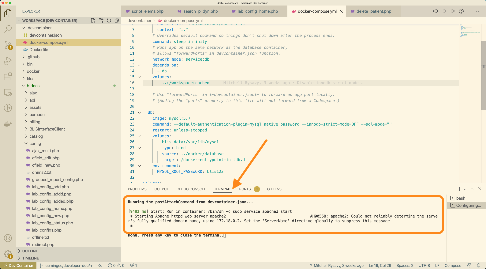

C4G BLIS Developer Guide¶
C4G Basic Laboratory Information System is a collaboration between Computing-for-Good (C4G) at Georgia Tech, the CDC, and participating PEPFAR countries. This doc will works as a supplement to BLIS_User_Guide.pdf, mainly to help developers quick ramp up on this repo and list out tips when contribute to this project.
- C4G BLIS Developer Guide
- Welcome
- Set up the dev envs
- Running environment
- Code directory and organization
- Deployment
Welcome¶
So welcome to this project! In this guide, we are going to go through the recommended tools, workflows and debug tips.
Set up the dev envs¶
Tools¶
- git Depending on your computer OS, there will be different step to setup git. You can refer to the official manual for git installation.
Tips on install git
On Windows, installing command-line tools can be done with a Windows package manager such as Scoop. On MacOS or Linux systems, installing tools can be done with package manager brew.
-
VScode For IDE, we recommended using VSCode, which is a lightweight, opensource IDE. VSCode-Extension recommended to install:
-
Docker We will need Docker as the major tool in the development cycle.
With the Docker application running, after installing the Remote-Containers and related extensions, we will be able to start the devcontainer which has been setup under /root/.devcontainer directory.
What's devcontainer and why do we use it here?
Devcontainers are a feature of Visual Studio Code that allow you to specify your development environment as a Docker container develop inside of it as if you were running the tools on your computer directly.
The c4g-blis-spr22/BLIS repository has a .devcontainer configuration already specified, so you can develop BLIS on any computer that can run Docker and Visual Studio Code.
Test the envs¶
A quick way to test the dependencies installed correctly is: 1. Clone the BLIS repository to your computer:
$ git clone https://github.com/C4G/BLIS.git
-
Open the folder in Visual Studio Code
-
A pop-up that says something like "This folder contains a devcontainer configuration" will appear. Click the button to open the folder in a container.
-
If that does not appear, open the command palette (Ctrl-Shift-P or Cmd-Shift-P) and find "Open folder in container" and select the BLIS folder.

-
Once the container is started, the ports should forward automatically. You can see apache2 running if you click the "Ports" tab on the bottom (if the bottom panel is not open, use Ctrl-` (backtick) to open it)
In this plot, you can see the terminal output, where the apache servers starts. 
In this plot, you can see the port, click the little earth button and then it will take you to the local hosted BLIS instance.

-
You can then browse BLIS in your normal browser by visiting http://localhost:80 (substituting 80 for another port, depending on what port VS Code has mapped to apache2.)
-
Log into the BLIS and start your exploration.
Read the data structures site for (username, password) pairs, as well as data structures stored in database before diving in
Running environment¶
Running on devcontainer¶
You can see more details on the Test the envs section.
Running on Windows¶
Aside by running BLIS on devcontainer, you can also try with running BLIS on Windows, where the BLIS was originally designed and developed on). This process will only require git to pull the code from github.
BLIS was originally developed to run on Windows using a discontinued project called Server2Go. This packages Apache2, MySQL, PHP, and Firefox together into a package that can be run all at once on a desktop computer.
See Also
This is the primary way that end-users are still using BLIS. You can still run BLIS this way to develop it.
Warning
These instructions are subject to change.
-
Clone the BLIS repository to your computer:
$ git clone https://github.com/C4G/BLIS.git -
Download the latest version of BLISRuntime.zip archive
- Unzip BLISRuntime.zip into the BLIS repository directory
- Run
BLIS.exe
The bundled Firefox will start and you can use BLIS normally, or make changes to files in the htdocs/ directory.
Code directory and organization¶
As you can see in the directory, there is the first level file tree directory. And in the following sections, we will cover the some of important file/directory for your faster & better understanding about the BLIS code organization.
├── .devcontainer
├── .github
├── .editorconfig
├── .gitignore
├── API_documentation.txt
├── Dockerfile
├── README.md
├── Update_Instructions.txt
├── bin
├── composer.json
├── composer.lock
├── docker
├── files
├── htdocs
├── local
├── log
├── splash.png
├── tools
├── update_C4GBLIS_v3.3.bat
└── vendor
Tips about file structure
The above tree structure can be generated via the tree command. For more details, read this doc.
Developer tools directories¶
Docker related¶
├── Dockerfile
├── docker
├── .devcontainer
.devcontainer contain the setup for docker setup locally when running in devcontainer; Dockerfile contains the details for pushing image to ghcr.io in the CI/CD stage (Also mentioned in the below Github related section). And docker/ directory contains the docker-compose file, bash files for deployment at Linux machine. More details can be seen in the Deployment section below.
Github related¶
├── README.md
├── files
├── log
├── .github
├── splash.png
.github/ directory, there is a CI/CD step: releasing latest changes to the ghcr.io, thus we can easily deploy the latest changes when needed. You can see more details in release-docker.yml.
Composer Related¶
├── composer.json
├── composer.lock
├── tools
├── vendor
Composer as the php package manager for BLIS. You will need to set it up before using it, see more details here. But this is not necessary till you want to make changes to the BLIS dependencies.
As for the composer.json and composer.lock file, you can refer to this documentation to understand how they work. composer.lock records the exact versions that are installed. So that you are in the same versions with your co-workers. And composer.json records the packages you specify and want to use in the project.
And the vendor directory is where the specified packages installed.
Source code directories¶
After going through the developer tools directories, you will find one few files/directories left.
├── API_documentation.txt
├── Update_Instructions.txt
├── bin
├── htdocs
├── local
├── update_C4GBLIS_v3.3.bat
htdocs and local. The htdocs contains almost all the modules in BLIS. And local directory contains the localization versions' settings of phrases, tips, UI appearance. Due to the complexity of this section, few features will be focused for illustration, feel free to add your findings when working on some features. 
Backup Data and Cloud Backup¶
Cloud backup means you can specify the IP Address and then send backup to the BLIS instance hosted on that IP Address. (More details of UI can be found in User Guide -> Backup Data section).
This functionality mainly lives in ./htdocs/export. The latest changes mainly live in backupData.php and backupDataUI.php. We can refer to specific git commits for better understanding.
UI changes¶
UI and tips have been refactored in the version [TODO], and we found out that the UI settings is reflected in both ./htdocs/Language and local/lab_id directory. Changes in ./htdocs don't necessary propogate to the local labs. So if you want to your changes to be reflected in both new labs and old existed labs, you will need to change the files in ./local/lab_id accordlingly.
There may be some confusion on default, en, fr versions across the repo. TLDR is default is the version will be setup by your country directory when setting up the lab, and can be en or fr. To better understand this scenario, let's imagine we are going to change the tips for english version, then potentially, we will make 4 changes (2 for default and en, 2 for local_lib and htdocs)
Deployment¶
After you are satisfied with your new changes and want to deploy a newer version BLIS on cloud. In this doc, we will use DigitalOcean for the deployment platform as example. You will go through two main steps:
- Push & merge your changes to github repo. Based on
./github/workflows/release-docker.yml, the newest change will reflect in theghcr.io/C4G/blis:latestdocker repo. - Use the docker image to deploy BLIS service as well as database service. An step-by-step detailed instruction can be seen in this site